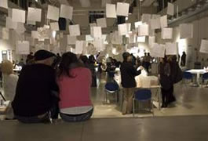
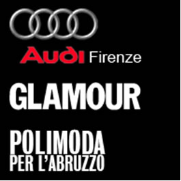

|  |
10/13 IED歐洲設計學院[台北.高雄 面試]- 11月7.8.9日，請預約面試
歐教展[台北展區]
IED歐洲設計學院將於台北11月7.8日參加歐洲教育展
歡迎對學校課程有興趣的朋友前來[世貿二館]了解
時間為下午13:00-18:00
並有現場面試,與代表一對一面談
歐教展[高雄展區]
今年第一次歐教展於[高雄]舉辦,歡迎位於南部朋友
於11月9日15:00- 19:00 至國賓飯店詢問課程
現場也有面試,請把握機會
歡迎與我們聯繫. 02 2721 3452
|
|  |
7/2 義大利Polimoda 2009年獎學金訊息發佈—AUDI汽車提供
AUDI-佛羅倫斯分部 提供獎學金 5000歐元給Polimoda 時尚視覺傳達碩士 課程的學生。
獎學金科系：時尚視覺傳達 Master in Fashion Visual Communication
參加資格：大學畢業或準畢業生
報名截止日：2009年9月。
開 課 日：2009年10月。
提供獎金 ：5,000歐元。
申請文件 ：申請表履歷與讀書計劃。
考試內容 ：性向測驗，廣告提案，申請動機訪談。
考試日期 ：2009年9月16日上午10:00 於Polimoda學校內.
Ｐolimoda將由教師們組成評估委員會,由以上內容甄選出得獎者。
更相關的獎學金詳細規則，煩請洽詢 02 2721-3452 ~Emi
|
|
| |
|
6/30 IED 2009國際學生獎學金訊息發佈
IED歐洲設計學院 提供2009年-2010年碩士班30個名額的獎學金申請。
比賽主題 – 設計一個更美好的世界. （參賽者藉著作品反應或提倡主題）
申請截止日期：2009年9月10日
提供名額：30位.每個科系各一名。包含以下：
15個全額獎學金(不包含註冊費).
15個半額獎學金(不包含註冊費).
申請條件：20-40歲.相關科系的學士學位或同等學歷.
申請文件：參賽表格+履歷+自傳+獎學金讀書計劃+主題作品集+大學的文憑+護照影本+作品題目+想法的描述(30行內)+至少10張圖片或影片或手稿+每個檔案要1000pixels以上+可加60分鐘以內的影像+可加成品的照片. (作品不可大於10M)
服裝設計要有簡短描+15件手稿. 註明材質.顏色.成品的照片.(作品要10M以上)
語言要求：與授課語言相符的語言.( 電話面試 )
內容要求：需本人作品. 作品不得是抄襲.暴力.攻擊.人性尊嚴等.
下列為不符合資格者：
1.已獲得IED其他課程獎學金者.
2.IED的員工與顧問.
3.參賽者選擇一個以上的課程申請獎學金.
截止日期：2009年9月15日前.(以寄件日為準)
公佈日期：2009年10月10日.
備註：作品無法退還.IED有權利應用.
評審：由IED四個科別的評審選出
30個獎學金科系：
1. Master in Fashion Communication and Stylist (English language) Milan ( 50% )
2. Master in Fashion Marketing and Retail Management (English language) Milan ( 50% )
3. Master in Fashion and Textile Design (English language) Milan (100% )
4. Master in Luxury Marketing Management (English language) Rome ( 50% )
5. Master in Motion Graphics Design (Spanish language), Madrid ( 50% )
6. Master in Fashion Management and Retail (Spanish language), Barcelona ( 50% )
7. Master in Interior Design (English language) Milan ( 50% )
8. Master in Light Design (English language) Milan ( 100% )
9. Master in Packaging Design (English language) Milan ( 100% )
10. Master in Product Design (English language) Milan ( 50% )
11. Master in Advanced Design for Transportation (English language) Turin ( 50% )
12. Master of Arts in Transportation Design - Work Experience (English language) Torino ( 100% )
13. Master in Yacht Design (English language) Venice ( 100% )
14. Master in European Design Labs: Product Design (English language), Madrid ( 100% )
15. Master in Design Management (English language), Barcelona ( 100% )
16. Master inBrand Management and Advertising Communication (English language) Milan ( 100% )
17. Master in Urban design (English language), Rome ( 100% )
18. Master in Landscape design (English language), Rome ( 100% )
19. Master in Industrial design for extreme sport (English language), Turin ( 100% )
20. Master in Sustainibility for Architecture (English language), Turin ( 100% )
21. Master in Photography and digital imaging (English language), Venice ( 50% )
22 Master in Interior design for commercial spaces (English language), Barcelona ( 50% )
23. Master in Arts Managmement (English language), Venice ( 50% )
24. MBA in Luxury and Fashion Management (English language), Paris-Milan ( 100% )
25. Master in Filmmaker (Italian language), Venice ( 50% )
26. Master in Graphic Design (Spanish language), Barcelona ( 100% )
27. Master in Advertising (Spanish language), Barcelona ( 50% )
28. Master in Institutional Communication (Spanish language), Barcelona ( 50% )
29. Master in Fashion Marketing and Communication (Spanish language),Barcelona ( 50% )
30. Master in Shoes and Accessories Design, (Spanish language), Barcelona ( 50% )
更相關的獎學金詳細規則，煩請洽詢 02 2721-3452 ~Emi
|
5/20 IED米蘭校區活動 - 我-女人 但男人也可以
第一屆的時尚造型設計碩士班，以發表最後作品集的方式，為為期400 小時的課程 劃下句點，學生們有機會把他們在碩士班 完成作品的相片編輯讓Bruna Rossi﹝我 女人“IO DONNA” 的總監之一﹞和Marina Malavasi ﹝我 女人“IO DONNA”主編之一 ﹞評鑑，以男人/ 男人和女人/ 女人 / 靜物 等為主題來拍攝運用各種不同
的照片配合模特兒經濟公司， 各種彩妝和髮型完成，學生們可以更深入的了解專業攝影技巧 時尚史 攝影史 和 時尚的文獻，來加強學生在創造力及溝通能力和編輯能力。
5/15 Sardinia 電影展 授獎給IED學生
由插圖、動畫及影片設計科的學生合作為Elio e le Storie Tese 而製作的音樂影片剪輯“Vitellopoli”
在 Sardinia 電影展中獲得最佳短片獎項。得獎的原因主要是由於它在動畫和真實場景之間的快速剪輯 成功的以簡單的文字劇本和諷喻來表達現今媒體的概念。
4/27 IED西班牙巴塞隆那校區新增碩士課程,歡迎索取課程介紹
4/23 IED 台北面試活動 5/14-17
IED將來台參展(新一代設計展),同時將由有面試活動,請來電預約!
4/22 Polimoda重要新政策-新增三個月研習課程
Polimoda英文碩士課程的每一科系即將新增三個月的案例研習課程,這個課程將由Polimoda主導,與學校的股東(當地時尚產業的公司),在課座教授帶領下實際參與企業或公司的業務合作機會.
往年台灣同學能爭取到工作機會的比例總是非常的低,然而今年POLIMODA這個新決定,對台灣學生來說,將免除了對外辛苦的陌生環境適應以及找到的實習的困難度. 三個月的實際研習課程,將能作為未來工作履歷中的實務經驗.
更好的消息是這三個月的課程結束前,課座教授將會從中選取表現優異的同學,由學校協助安排至時尚產業公司工作三個月.
4/20 IED設計碩士班-將贈送筆記型電腦
2010年IED碩士課程的學生將獲得一台筆記型電腦.
IED致力於學生與業界環境接軌的努力成績,使得IED在歐洲建立起教學的品質模範.除了師資,學校更在環境上,更投入了高成本的硬體設備.
設計碩士班的部份課程, IED將提供每人1台筆記型電腦,
課程包含: [產品設計] [室內設計] [燈光設計] [包裝設計] [服裝和織品設計]
4/1暑期課程發佈 |